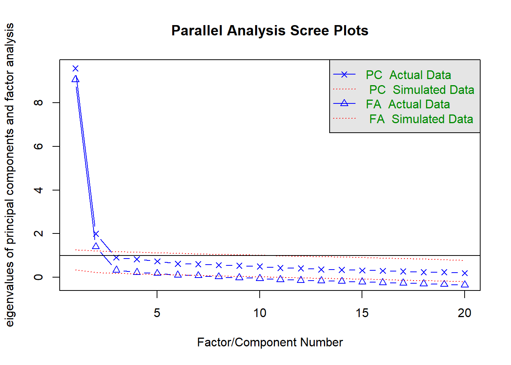

Item Analysis with Item Response Theory (in Turkish)
Madde Tepki Kuramı temelli madde analizi. Hem çok kategorili hem de iki kategorili maddeler için MTK temelli madde analizi uygulama süreçleri…
psychometrics
IRT
Author
Affiliation
Ali Emre Karagül
TOBB ETU- University of Economics & Technology
Published
November 20, 2021
Bu çalışmada çok kategorili puanlanan maddelerden elde edilen bir veri seti kullanılmıştır. Çalışmanın ilk kısmında çok kategorili maddelere yönelik MTK analizleri yürütülmüştür. Daha sonra aynı veri seti iki kategorili verilere dönüştürülmüştür. Yine MTK süreçleri bu sefer de iki kategorili maddeler için yürütülmüştür. İzlenen adımlar şu şekildedir:
1. Çoklu puanlanan maddelere yönelik olarak;
Uygun MTK modeli nedir?
Bu modele göre madde ve test parametreleri nasıldır?
İdeal ve sorunlu madde örnekleri nasıldır?
Test bilgi fonksiyonunu nasıldır?
Birey yetenek puanlarının dağılımı nasıldır?
2. Her bir maddeyi, kendi madde ortalamasından keserek 1-0 verisine dönüştürünüz. Buna göre iki kategorili puanlanan maddelere yönelik olarak;
Uygun MTK modeli nedir?
Bu modele göre madde ve test parametreleri nasıldır?
İdeal ve sorunlu madde örnekleri nasıldır?
Test bilgi fonksiyonunu nasıldır?
Birey yetenek puanlarının dağılımı nasıldır?
3. İlk iki araştırma sorusunda elde edilen birey yetenek puanları arasındaki korelasyon nasıldır?
4. İlk iki araştırma sorusunda elde edilen birey yetenek puanları;
Öğrencilerin fakültelerine, sınıf düzeylerine ve cinsiyetlerine göre manidar farklılık göstermekte midir?
Öğrencilerin akademik ortalamaları ile manidar bir korelasyon göstermekte midir?
Preprocessing
Tabi ki işe öncelikle verinin working directory’den yüklenmesi ve ön düzenleme süreçleri ile başladık:
Veri setinde ilk sütunun sıra sayıları olduğunu görünce aman tanrım dedik ve sildik.
data1<-data1[,-1] # fazla kalabalığa gerek yok, aynı isimle devam.
Kayıp veri olup olmadığını anlamak için:
data1[data1 ==0] <-NAsum(is.na(data1))
[1] 44
Neredeyse %8 oranında missing value var. Too much! Alayını atıyoruz. Artık adını da değiştirelim.
data2<-na.omit(data1)
Madem ki öylesine bir veri seti ile öylesine bir analiz yapıyoruz ve practical kaygılarımız yok, veri setimizi büyütelim. 1000 kişi olsun:
set.seed(16611106) # olur da sen de denemek istersen diye aynı veri setini üretmemizi sağlar.data3 <- data2[sample(1:495, 1000, replace = T), ] #adını da değiştirelim
Son olarak, veri setinde işimize yaramayacak bir sürü demografik detay var. Atıyoruz:
row.names(data3)<-NULL#önce adlarını silelim.data4<- data3[,5:24] #5. sütundan sonrası çöp
Çalışmanın birinci araştırma sorusu kapsamında “data4” adlı veri seti kullanılmıştır. Bu veri seti 1000 gözlemden ve 20 değişkenden oluşmaktadır. Değişkenler, 1 ile 5 arasında bir tam sayı değeri almaktadır. Çalışmanın ikinci araştırma sorusu kapsamında ise her bir madde kendi madde ortalamasından kesilerek iki kategorili veriye dönüştürülmüştür. Bu aşamalar ilgili başlık altında raporlaştırılmıştır. Ön düzenlemelerin ardından araştırma sorularına cevap aramak için ileri analizlere devam edilmiştir.
1.a. Varsayımların kontrolü ve uygun MTK modelinin belirlenmesi
Çok kategorili puanlanan maddelerden oluşan ölçeğin Madde Tepki Kuramı çerçevesinde incelenmesi sürecinde öncelikle uygun MTK modelinin belirlenebilmesi için varsayım kontrolleri yapılmıştır. Bu bağlamda, tek boyutluluk ve yerel bağımsızlık varsayımları ile model-veri uyumu kontrol edilmiştir. Tek boyutluluk varsayımı kontrolü için paralel analiz, yamaç birikinti grafiği ve faktör analizi kullanılmıştır. Bu aşamada kullanılan paketler: Psych ve GPArotation.
Paralel Analizden elde edilen yamaç birikinti grafiği şöyledir:
library(psych)
Warning: package 'psych' was built under R version 4.2.2
Warning in fa.parallel(data4, n.obs = 1000, cor = "poly"): You specified the
number of subjects, implying a correlation matrix, but do not have a correlation
matrix, correlations found

Parallel analysis suggests that the number of factors = 5 and the number of components = 2
Yamaç birikinti grafiği iki bileşenli bir yapıyı göstermektedir. Son olarak faktör analizi yardımı ile hem tek hem de iki bileşenli modeller oluşturulmuştur:
Bu iki modelin burada çıktılarını alsak baya uzun oluyor. Ama özetle; ben beğendiğim ve devam analizi için seçtiğim 2 faktörlü model ile devam ediyorum. Bu modelin çıktıları incelendiğinde, 1-12 numaralı maddelerin bir boyutta, 13-20 numaralı maddelerin ise diğer bir boyutta yüklendiği görülmektedir. Bu nedenle veri seti aşağıdaki adımlar izlenerek ikiye bölünmüş ve ileri analizler her iki faktör için de ayrı ayrı yürütülmüştür.
data4a<-data4[1:12]data4b<-data4[13:20]
Yerel bağımsızlık varsayımının kontrolü için Yen’in Q analizi (Yen, 1984) her iki bileşen için de uygulanmıştır. Bu süreçte sirt paketinden (Robitzsch, 2020) yararlanılmış ve aşağıdaki adımlar izlenmiştir.
Bu üstteki kodun çıktısı çooook uzun. Buraya koymuyorum. Tabi biz veriyi bootstrap ile çoğalttığımız için bu varsayım karşılanmadı ama gerçek veri ile çalışsaydık bu varsayımın karşılanmaması durumunda çöp olacaktı analiz. Yani örneklem yetersiz, daha çok örneklem lazım diyecektik. Ya da modeli veya madde sayılarını inceleyecektik vs. vs.
Birinci araştırma sorusunun son aşamasında ise model veri uyumunun incelenmesi ve en uygun modelin seçilmesi yer almaktadır. Model-veri uyumu incelemesi ltm paketi (Rizopoulos, 2006) yardımı ile her iki bileşen için de ayrı ayrı GRM modeli ile yürütülmüştür. Her iki bileşende de model-1, ayırt edicilik düzeylerinin her madde için farklılaştığı modeli betimlemektedir. Model-2 ise ayırt edicilik düzeylerinin her madde için eşit tutulduğu modeldir.
#install.packages("ltm")library(ltm)
Warning: package 'ltm' was built under R version 4.2.2
Zorunlu paket yükleniyor: MASS
Zorunlu paket yükleniyor: msm
Zorunlu paket yükleniyor: polycor
Attaching package: 'polycor'
The following object is masked from 'package:psych':
polyserial
Attaching package: 'ltm'
The following object is masked from 'package:psych':
factor.scores
Modeller arasında manidar farklılık anlamına gelen p değerlerine (<.05) sahip olmasının yanı sıra, Akaike ve Bayesian bilgi kriter değerleri en düşük olan modellerin her iki bileşen için de model-1 olduğu görülmektedir. Bu nedenle model-1 ile daha iyi bir model-veri uyumu sağlanmaktadır. Devam analizleri her iki bileşen için de model-1 ile yürütülmüştür.
![]()